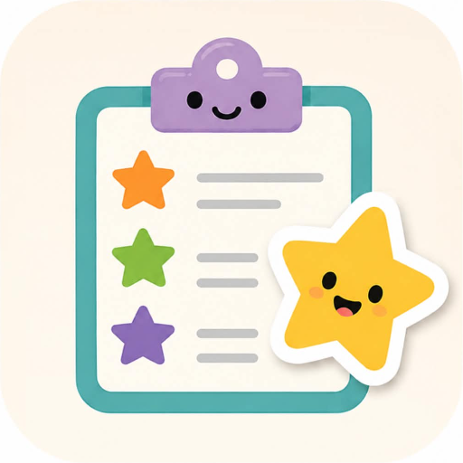

Last updated: 13 August 2026
The short version: Chore Stars works entirely offline. Everything you type into it — your children's names, their chores, goals and stickers — is stored only on your own device. It is never sent to us or to anyone else: we have no servers and the app has no accounts. The one thing that leaves your phone is the optional purchase, and that goes to Google Play rather than to us.
This policy covers the Chore Stars mobile app. In this document, "we" and "us" mean Jagganaut Limited, a company registered in New Zealand and the developer of Chore Stars. "You" means the person using the app — usually a parent, carer or guardian setting it up for a child.
Nothing. We do not collect, transmit, sell, share or store any personal information. We have no servers, no analytics and no accounts, so there is nowhere for your information to go.
| Personal information collected | None |
|---|---|
| Data sent off your device | None |
| User accounts or sign-in | None — the app has no login |
| Advertising | None, and no ad networks are included |
| Payment or card details | Never seen by us — Google Play handles the purchase |
| Analytics or usage tracking | None |
| Third-party data-collecting services | None |
| Location, camera, microphone, contacts | Never requested or accessed |
So that your progress is still there next time you open the app, Chore Stars saves the following in your device's own private app storage:
This information never leaves the device. We cannot see it, and neither can anyone else. It is not backed up to us in any form.
One thing worth being straight about, because it is not us but it does concern the app. If you installed Chore Stars from the Google Play Store, and you have separately agreed to share usage and diagnostic data with Google, then Google's own software on your phone may report anonymous crash and performance information about apps — including this one — back to Google.
That happens at the level of the phone and the Play Store, not inside Chore Stars. We do not ask for it, we cannot switch it on or off, and it contains none of the names, chores or goals you have entered. We would see only an anonymous count of crashes. You can change what your device shares with Google in your Android settings, under Google, then your account.
Chore Stars is designed to be used by children with a grown-up's help, and we have built it so that using it is inherently safe:
We encourage grown-ups to use a nickname or first name only when setting up a child's profile. Because nothing is transmitted, any name you choose stays on your device regardless.
Chore Stars therefore does not knowingly collect personal information from children under 13 (as defined by the US Children's Online Privacy Protection Act, "COPPA"), nor from children under 16 (as defined by the UK and EU General Data Protection Regulation). It collects no personal information from anybody, of any age, which also satisfies our obligations under the New Zealand Privacy Act 2020. There is consequently nothing for a parent to review, correct or ask us to delete — but if you have a question, please do get in touch.
If you set a reminder time for a chore, the app asks your device's permission to show notifications. These reminders are scheduled and shown entirely by your own device — they are not push notifications, nothing is sent through our servers, and no device or push token is ever collected. You can turn reminders off at any time in the app, or revoke the permission in your device settings.
Chore Stars is free for one child and one reward goal. A single one-off payment unlocks unlimited children and goals. There is no subscription and nothing else to buy.
The payment is handled entirely by Google Play. We never see, receive or store your card number, your billing address or your Google account details — Google tells the app only whether this device has bought the unlock, and the app remembers that answer locally so it keeps working offline.
The purchase lives inside Settings, behind the maths question, so a child cannot start it on their own. If you change phones or reinstall, "Restore purchase" brings the unlock back at no cost. Refunds are handled by Google under their usual terms.
Those are the only permissions Chore Stars actually uses, alongside the billing permission that lets Google Play offer the optional purchase. The app store may also list a small number of standard technical permissions that come as part of the toolkit the app is built with, such as network access. Chore Stars does not use those to collect, send or receive any information about you or your children. It never asks for your location, camera, microphone, contacts or files.
Because everything is stored locally, you are always in full control:
There is nothing for you to request from us, because we hold nothing.
If the app ever changes in a way that affects privacy, we will update this page and change the "last updated" date above. If a future version ever collected data, we would say so here clearly and ask for your consent first.
If you have any questions about this policy or about privacy in Chore Stars, please get in touch at support@chore-stars.com. Chore Stars is developed by Jagganaut Limited, New Zealand.